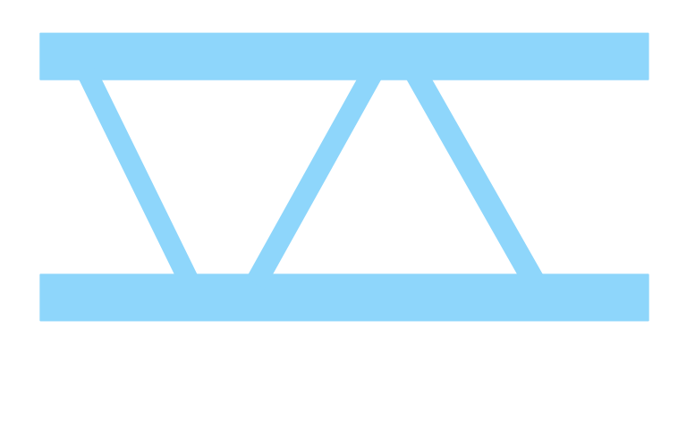

Generate interactive genome visualizations, annotate genomic features, and visualize multi-omics data using chromoMap R package.
-
version
release notes -
build with


-
developed by
Kentucky, USA
-
cite chromoMap publication
Lakshay Anand , Carlos M. Rodriguez Lopez
Environmental Epigenetics & Genetics Group, University of Kentucky, USA - Cite
introducing chromoMap App
A GUI interface to chromoMap R package
chromoMap App
what’s New?
-

Bar and Scatter Plots -

epi Tags -

Data Filters -

Links
Prominent Features
-
Visualize genes, genomes, or genomic regions of any living organism.
-
Polyploidy
-
Polyploidy allows visualization of different sets of chromosomes, differing in size and numbers, on the same plot. learn more
-
Chromosome Heat Maps
-
Visualize feature-associated data, like various multi-omics data, as heat colors on chromosomes. learn more
-
Bar and Scatter Plots
-
Visualize feature-associated data, for the annotated features, as either bar plots or scatter plots. learn more
-
epi-tags
-
Mark genomic loci with condition-based tags. learn more
-
Filters
-
Allows conditional-coloring of bar/scatter plots based on mathematical conditions on the data. learn more
-
chromLinks
-
visualize connections or links between loci. learn more
-
Discrete Color Maps
-
Visualize grouped annotations as discrete colors on the chromosomes. learn more
-
Labellings
-
Add labels to the chromosome plots. learn more
-
Hyperlinks
-
Add hyperlinks for annotated features. learn more
-
Highly Customizable
-
Tweak every aspect of the plot.
-
export options
-
export the plots as either standalone HTML documents or static images.